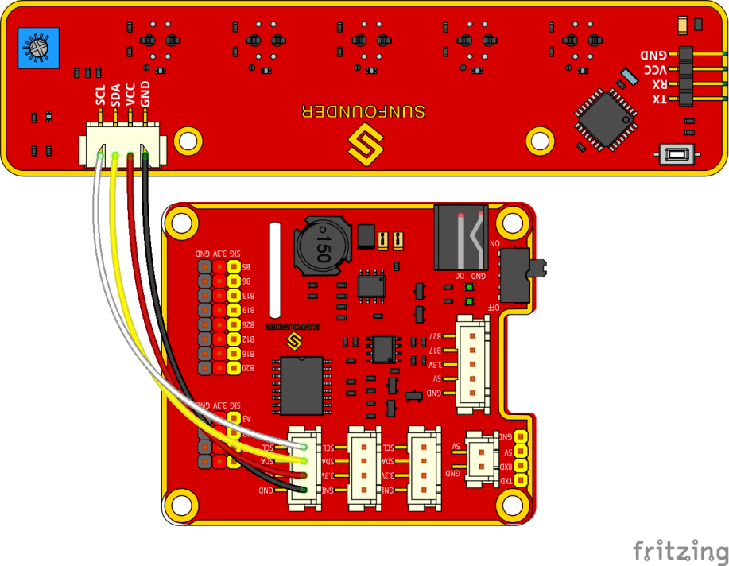

Line Following¶
How it works¶
The line follower detects lines in the surrounding environment, and transfers the data to the processor. The processor analyzes the data, and sends a command to control the movement of front wheels and rear wheels.
Procedures¶
Step 1 Assembly
Connect the light follower to the Sensor Connector with M3*10 screws and M3 nuts, and then assemble them to the car with two M3*10 screws and two M3 nuts. You're suggested to hold the nuts underneath with your fingers.

Step 2 Wiring
Connect the light follower to the Robot HATS with a 5-pin anti-reverse cable as shown below.
Step 3 Test
Get into the directory example:
cd ~/SunFounder_PiCar-S/example
Check whether any i2c device is recognized or not via i2c-tools
sudo i2cdetect -y 1

We can see 11 is the line follower’s i2c address. If it is not shown, it proves your wiring is not correct and the i2c communication with Raspberry Pi fails too. You need to check the wiring before the next step.
Run the test code.
python3 test_line_module.py

注釈
For the better working of line following module, we should adjust its sensitivity. The steps are as follows:
Place the module on the white surface, read the value ; place it on balck surface, and read value.
Calculate the difference, rotate potentiometer on the line following module toward the clockwise and anticlockwise till the diffence reaches up to the maximum. Now the debugging is finished.
Step 4 Starts Running!
Run the line follower code
python3 line_follower.py
A prompt of calibration will be printed on the screen when the program starts to run. We will calibrate the module on a white surface first: place all the five probes of the line follower above a white board. The prompt of completed calibration will be printed on the screen a few seconds later. Then let’s move on to calibration on black line. Also the prompt of starting is printed on the screen, and then place all the probes above the black lines. And the prompt of calibration completed will be printed on the screen a few seconds later.
When the module calibration is all completed, we can run the car then. Place the PiCar-S with probes above the black line on the white board, and then it will go forward following the line itself.
How to make a track for line following¶
To make a track for the car to follow a black line, you need to prepare the following materials:
A large sheet of paper, a roll of black tape (as black lines), a hard card board (the size depending on the size of the track) or a flat surface like the floor or desk.
1. Spread the paper out smoothly on the hard board, and paste on the board or flat surface.
Paste the tape on the paper.
Rules for making:
- Width of the black line: about 18-30mm, nearly the distance between
two probes, no more than the minimum distance of two nonadjacent probes
- The gap between two lines: more than 125mm, which is the width of the
whole module, to prevent the car from getting confused when detecting two lines at the same time.
- The semidiameter of curves: more than 138mm. When the front wheels
turn left or right 45 degrees, the semidiameter of the path by which the car turns is equal to the wheelbase (the distance between the center of the front wheels and rear wheels). The car won't be able to turn and pass the curve smoothly if the semidiameter of the curve is too small.
A track sample is shown as below (the original map file can be found under folder map in github):

Code Explanation of line_follower.py¶
Whole Work Flow
Considering the interference of negative environment factors, we need to calibrate the line follower sensor before actual use.

Here two main functions including the line follower calibration and line following are included in the main program.
Subflow of Line Follower Calibration Function
When we run the line follower configuration, we will start from white color, then black color, which is more like the upper limit and lower limit of the sensor. Then we take the average value of black and white as reference value: if the detected value is higher than the reference, it should be white; if the detected is lower than the reference, it should be black. We will show the five detectors’ status by 5 elements [0,0,0,0,0].

Subflow of Line Following Function

In the line following function, we set the turning angle of the servo in different levels according to the detection results of the probes. If the line in front of the car is detected as a small curve, then the car will turn a small angle; if it is a big one, the car will turn a large angle. Thus, here we set four angle-turning constants: a_step, b_step, c_step, and d_step.

When the car moves forward originally, the servo is in 90 degrees. To drive the car to turn left, the servo should be in 90+step degrees; to turn right, the servo should be in 90-step degrees.
There is a special case: if the car runs off the track, and all the probes cannot detect the black lines any more, then it will continue the program below.

In some case, especially when the car turns in a direction when the semi diameter of the curve is very small (1), the car may run out of the track and cannot detect any black line (2). If there is no response program in such case, the car will be unable to follow the line again. Thus we set the response program to let the car move backwards in the opposite direction (3), and then turn back to the original direction until a black line is detected again and move forward (4).
Functions Explanation
The logic of the code is just as shown in the flow chart above.
Three Python modules are used in the code, including the imported SunFounder_Line_Follower, front_wheels, and back_wheels. They are the drivers for this kit, respectively for line following , front wheels, and rear wheels
The related classes have been defined here. When the modules are applied to use, objects will be created for related classes, and different parts of hardware will be driven by calling a function by the class object.
Similar to the line following module, we create an object named lf:
lf = Line_Follower_module.Line_Follower(references=REFERENCES)
The parameter is initial, and then we can apply the function by calling a class object.
lf.read_digital()
This function is used to read the analog signal of all probes, and convert it into digital signal. If the signal is larger than the reference, the corresponding parameter will be 0; if it is lower than the reference, the parameter will be 1. There are five probes, thus we will get a 5-parameter list.
fw.turn(turning_angle)
The function for front wheels' turning. The main program will call this function if applying the front wheels for turning. The parameter is the turning angle.
bw.forward()
bw.set_speed(forward_speed)
Here we need two functions for rear wheels. One is to control the rotating direction as forward (for rotating backwards, bw.backward()). The second one is to set the rotating speed; the parameter is the speed value (range 0~100). The bigger the parameter is, the faster the wheel rotates.